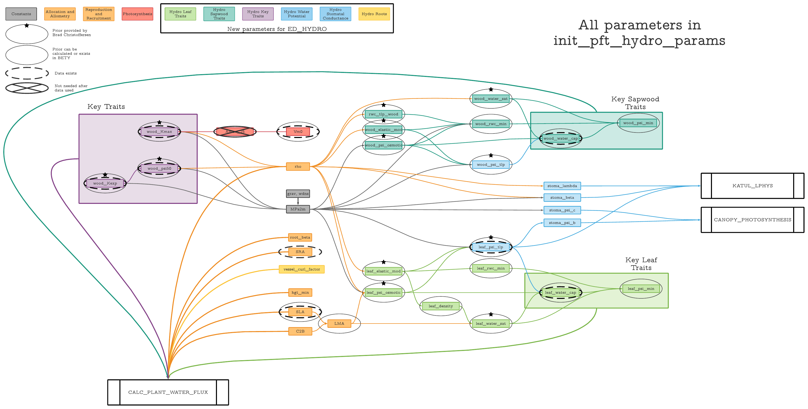

Setup

## [1] "leaf_psi_tlp" "wood_psi_tlp" "rwc_tlp_wood" "leaf_density"
## [5] "leaf_psi_min" "leaf_water_cap" "wood_Kexp" "wood_psi_min"
## [9] "wood_water_cap"| ED_name | Christoffersen_name | BETY_variable_id | BETY_prior_id | ED_units | Christoffersen_units | theor.min | low.025 | low.25 | mean | upp.75 | upp.975 | theor.max |
|---|---|---|---|---|---|---|---|---|---|---|---|---|
| avuln_node | NA | NA | NA | MPa * 100 | 1e-01 | 1.00 | 10.0 | NA | 100 | 200.00 | NA | |
| leaf_elastic_mod | epsil_node | 1000000294 | NA | MPa | MPa | 1e+00 | 5.00 | NA | 20.00 | NA | 50.00 | NA |
| wood_elastic_mod | epsil_node | NA | NA | MPa | MPa | 1e+00 | 5.00 | NA | 20.00 | NA | 50.00 | NA |
| wood_Kmax | kmax_node | 1000000290 | NA | kg H2O / m / s | kg m-1 s-1 MPa-1 | 1e-02 | 0.10 | 0.5 | NA | 5 | 10.00 | NA |
| wood_psi50 | p50_node | 1000000289 | NA | m | MPa | 1e-01 | 0.50 | 1.0 | NA | 4 | 6.00 | NA |
| leaf_psi_osmotic | pinot_node | 1000000295 | NA | m | MPa | 1e-01 | 0.50 | NA | 2.00 | NA | 4.00 | NA |
| wood_psi_osmotic | pinot_node | 1000000298 | NA | m | MPa | 1e-01 | 0.50 | NA | 2.00 | NA | 4.00 | NA |
| leaf_psi_tlp | pitlp_node | 1000000284 | NA | m | MPa | 5e-01 | NA | NA | NA | NA | NA | 6.00 |
| wood_psi_tlp | pitlp_node | 1000000301 | NA | m | MPa | 1e-01 | NA | NA | NA | NA | NA | NA |
| rwc_tlp_wood | rwctlp_node | 1000000296 | NA | unitless | unitless | NA | NA | NA | NA | NA | NA | NA |
| leaf_water_sat | thetas_node | 1000000285 | NA | kg H2O/kg biomass | kg kg-1 | 1e-02 | 0.40 | NA | 0.65 | NA | 0.88 | 0.99 |
| wood_water_sat | thetas_node | 1000000286 | NA | kg H2O/kg biomass | kg kg-1 | 5e-02 | 0.35 | NA | NA | NA | 0.80 | 0.90 |
| leaf_density | NA | NA | NA | kg/m3 | NA | 1e-07 | NA | NA | NA | NA | NA | 2000.00 |
| leaf_psi_min | NA | 1000000299 | NA | m | NA | 1e-01 | NA | NA | NA | NA | NA | 700.00 |
| leaf_water_cap | NA | 1000000287 | NA | kg H2O/kg biomass/m | NA | 1e-07 | NA | NA | NA | NA | NA | NA |
| wood_Kexp | NA | 1000000305 | NA | unitless | NA | NA | NA | NA | NA | NA | NA | NA |
| wood_psi_min | NA | 1000000300 | NA | m | NA | 1e-01 | NA | NA | NA | NA | NA | NA |
| wood_water_cap | NA | 1000000288 | NA | kg H2O/kg biomass/m | NA | 1e-07 | NA | NA | NA | NA | NA | NA |
Choosing PFTs
- 2: early tropical
- 3: mid tropical
- 4: late tropical
Here we are only using one tropical PFT instead of three. But there is a hydro and non, hydro version. \
Both were cloned from the Broadleaf Tropical PFT made for FATES, with additional species added in when trait data was added for the meta analysis.
- ED_Tropical: 1000000132 (http://psql-pecan.bu.edu/bety/pfts/1000000132)
- ED_Tropical_Hydro: 1000000131 (http://psql-pecan.bu.edu/bety/pfts/1000000131)
0.1 PFT: ED_Tropical_Hydro
ED id: 1000000131
pftid <- 1000000131
priorid <- tbl(bety, "pfts_priors") %>% filter(pft_id == pftid) %>% pull(prior_id)
pfts_priors <- tbl(bety, "priors") %>% filter(id %in% priorid) %>% dplyr::select(one_of("id", "variable_id", "distn", "parama", "paramb")) %>%
left_join(tbl(bety, "variables") %>% dplyr::select("id", "name"), by = c("variable_id" = "id")) %>% collect() %>% rename("var_name" = "name")
kable(pfts_priors)| id | variable_id | distn | parama | paramb | var_name |
|---|---|---|---|---|---|
| 1000000099 | 2000000005 | unif | 0.0000 | 0.500 | orient_factor |
| 1000000422 | 1000000055 | unif | 0.1000 | 1.100 | wood_density |
| 1000000384 | 1000000284 | lnorm | 5.4200 | 0.530 | leaf_psi_tlp |
| 1000000446 | 1000000307 | norm | 0.4700 | 0.050 | b2Rd |
| 1000000429 | 1000000292 | unif | 0.0000 | 100.000 | SRA |
| 1000000416 | 1000000301 | lnorm | 5.4300 | 0.550 | wood_psi_tlp |
| 1000000425 | 1000000305 | weibull | 0.8000 | 4.070 | wood_Kexp |
| 1000000430 | 1000000290 | beta | 0.7200 | 21.950 | wood_Kmax |
| 1000000445 | 1000000306 | gamma | 138.7800 | 292.440 | b1Rd |
| 1000000405 | 1000000287 | lnorm | -0.3200 | 0.750 | leaf_water_cap |
| 1000000420 | 1000000289 | lnorm | 5.2800 | 0.850 | wood_psi50 |
| 1000000457 | 1000000313 | unif | 0.0001 | 0.100 | root_beta |
| 1000000447 | 1000000309 | lnorm | -3.9300 | 0.030 | b1Bl_large |
| 1000000448 | 1000000310 | norm | 1.8500 | 0.020 | b2Bl_large |
| 2000000060 | 26 | weibull | 2.0000 | 7.000 | stomatal_slope |
| 1000000417 | 1000000288 | lnorm | 0.3700 | 0.980 | wood_water_cap |
| 57 | 27 | beta | 4.0600 | 7.200 | growth_resp_factor |
| 1000000460 | 1000000314 | unif | 1.0000 | 5.000 | stoma_psi_c |
| 35 | 41 | weibull | 1.5500 | 0.862 | root_turnover_rate |
| 140 | 273 | beta | 1.0000 | 1.000 | agf_bs |
| 142 | 15 | weibull | 2.1000 | 12.100 | SLA |
| 240 | 500 | unif | 0.0100 | 0.200 | leaf_reflect_vis |
| 241 | 501 | unif | 0.0100 | 0.300 | leaf_reflect_nir |
| 242 | 502 | unif | 0.0100 | 0.200 | leaf_trans_vis |
| 243 | 503 | unif | 0.0100 | 0.600 | leaf_trans_nir |
| 131 | 40 | unif | 0.0400 | 1.000 | leaf_turnover_rate |
| 137 | 21 | lnorm | -0.2500 | 1.000 | fineroot2leaf |
| 197 | 7 | gamma | 1.5000 | 0.400 | leaf_respiration_rate_m2 |
| 216 | 463 | unif | 1.4000 | 2.600 | veg_respiration_Q10 |
| 227 | 39 | gamma | 2.0000 | 22.000 | quantum_efficiency |
| 228 | 4 | weibull | 1.7000 | 80.000 | Vcmax |